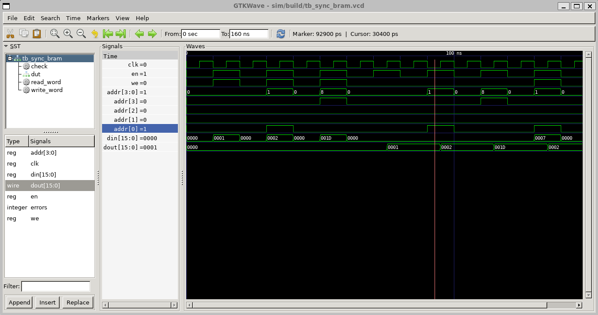
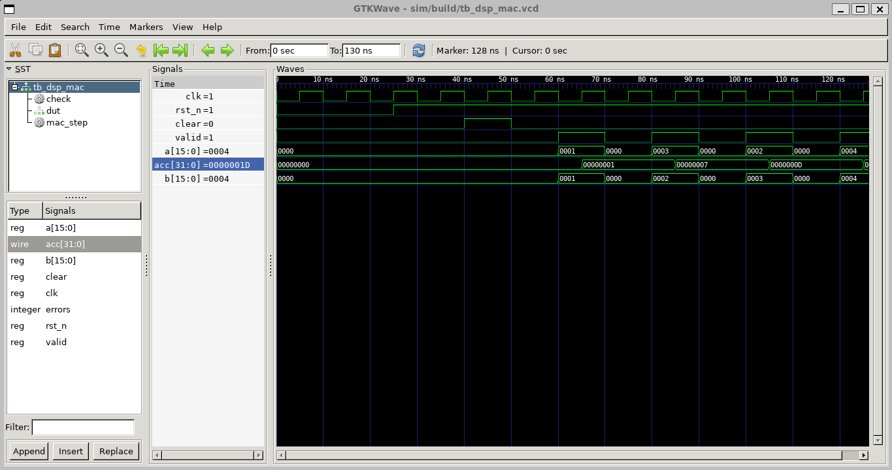
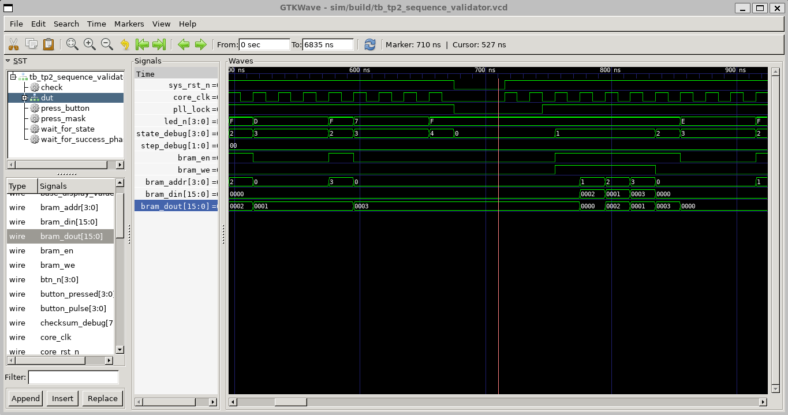
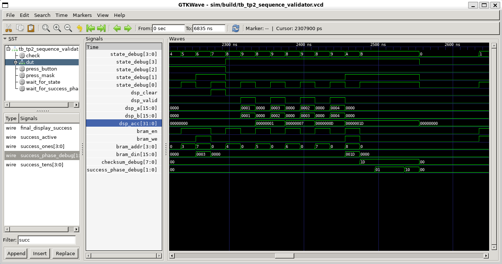
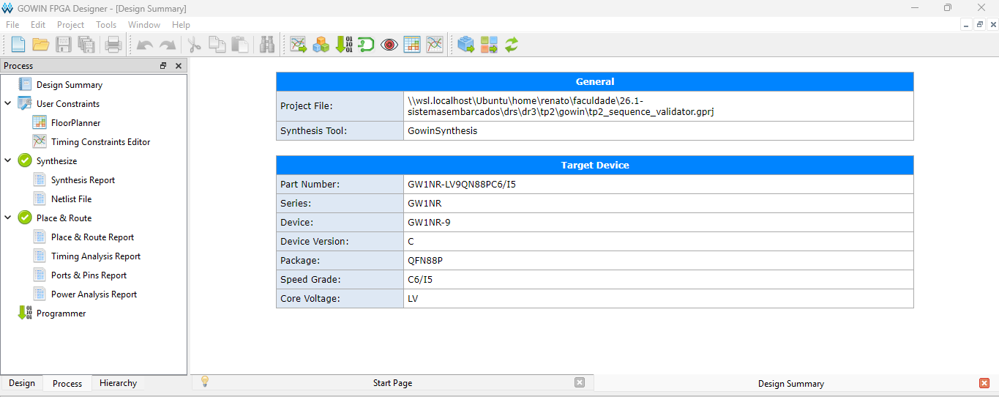

Evolução do validador de sequência do TP1 para uma arquitetura controlada por FSM, com armazenamento síncrono em BRAM, operação aritmética em DSP e clock interno derivado por PLL.
O projeto do TP2 continua diretamente o sistema construído no TP1: uma FSM exibe uma sequência fixa nos LEDs onboard da Tang Nano 9K e valida a resposta digitada em quatro botões externos. A montagem física foi mantida, preservando os mesmos botões, LEDs, display de sete segmentos, reset e mapeamento de pinos.
A evolução técnica do TP2 está na forma como o sistema passa a usar recursos internos especializados da FPGA. A sequência esperada e o histórico de entradas passam pela BRAM, o checksum final é calculado por um módulo aritmético inferido em DSP, e todo o núcleo sequencial roda em um clock derivado da PLL.
| Recurso externo | Uso no TP2 | Observação |
|---|---|---|
| LEDs onboard | Exibição da sequência esperada | Mesma polaridade ativa em baixo do TP1. |
| Botões externos | Entrada do usuário para validar a sequência | Entradas ativas em baixo, com pull-up configurado. |
| Display de sete segmentos | Progresso, erro e checksum final | Catodo comum, segmentos ativos em alto. |
| Reset onboard | Reinicialização da FSM, BRAM e DSP | O reset interno também depende do lock da PLL. |
A FSM continua sendo o elemento central de controle. Ela inicializa a BRAM, lê a sequência esperada, valida os botões, grava as entradas corretas, aciona o DSP e registra o checksum calculado. O top-level apenas integra condicionamento de botões, PLL, BRAM, DSP, FSM e decodificação do display.
| Endereço | Conteúdo | Controle |
|---|---|---|
| 0..3 | Sequência esperada: 0, 2, 1, 3 | Escrita pela FSM logo após reset/PLL lock; leitura durante exibição e validação. |
| 4..7 | Histórico das entradas corretas do usuário | Escrita pela FSM durante a fase de entrada. |
| 8 | Checksum final calculado pelo DSP | Escrita pela FSM após a fase aritmética. |
| 9..15 | Reservado | Não usado nesta versão. |
O checksum inteiro é calculado por multiply-accumulate:
checksum = soma((entrada[i] + 1) * (i + 1)), para i = 0..3 entrada correta = 0, 2, 1, 3 checksum = (1*1) + (3*2) + (2*3) + (4*4) = 29
O TP2 exige demonstrar o uso consciente de BRAM, DSP blocks e PLL. A tabela abaixo resume o papel de cada recurso dentro do sistema implementado.
| Recurso | Módulo | Papel no sistema | Justificativa tecnica |
|---|---|---|---|
| BRAM | sync_bram | Armazena sequência esperada, entradas digitadas e checksum. | Substitui armazenamento distribuído em registradores por memória síncrona controlada pela FSM. |
| DSP | dsp_mac | Executa a operação de soma de produtos para gerar o checksum. | Usa caminho aritmético dedicado para multiplicação e acumulação inteira. |
| PLL | pll_wrapper | Gera o clock interno derivado usado pela FSM e pelos módulos integrados. | Separa o clock externo da placa do dominio interno controlado e sincronizado por lock. |
Os relatórios de Place & Route e de recursos hierárquicos confirmam a inferência dos blocos especializados:
BSRAM | 1/26 | 4% DSP | 1/10 | 10% --MULTADDALU18X18 | 1 rPLL | 1/2 | 50%
Trechos completos preservados em evidencias/recursos_fpga_tp2.txt e evidencias/hierarquia_recursos_tp2.txt.
sequence_validator_top
|--pll_wrapper_inst
|--pll_inst
|--sync_bram_inst
BSRAM NUMBER = 1
|--dsp_mac_inst
DSP NUMBER = 1
| Arquivo | Responsabilidade |
|---|---|
| sequence_validator_top.v | Integra clock derivado, reset interno, botões, FSM, BRAM, DSP e display. |
| sequence_fsm.v | Controla os estados do sistema, ciclos de memória, validação da sequência e fase DSP. |
| sync_bram.v | Memória síncrona single-port, inferida como BSRAM pelo Gowin. |
| dsp_mac.v | Módulo aritmético registrado para multiplicação e acumulação, inferido como DSP. |
| pll_wrapper.v | Encapsula a PLL para hardware e fornece modelo comportamental em simulação. |
| gowin_rpll_27_to_13p5.v | Instancia a primitive/IP de PLL Gowin para gerar o clock interno. |
| result_display_mux.v | Alterna a exibição de sucesso entre S, dezena e unidade do checksum. |
| seven_segment_decoder.v | Decodifica dígitos 0..9, erro E e sucesso S. |
| Grupo | Estados | Função |
|---|---|---|
| Inicialização | IDLE, INIT_MEM_WRITE | Prepara registradores e grava a sequência esperada na BRAM. |
| Exibição | SHOW_READ, SHOW_DISPLAY | Lê a BRAM e acende os LEDs na ordem esperada. |
| Entrada | WAIT_INPUT, EXPECT_READ, CHECK_AND_LOG | Captura botões, lê valor esperado e grava a entrada correta. |
| Score | SCORE_CLEAR, SCORE_READ, SCORE_ACCUM, SCORE_STORE | Aciona o DSP, acumula o checksum e grava o resultado em memória. |
| Terminais | SUCCESS, ERROR | Trava sucesso até reset ou erro até reset. |
Foram desenvolvidos três testbenches. Os testes validam os blocos internos isoladamente e depois validam o sistema integrado com a FSM controlando BRAM, DSP e PLL. As simulações geram arquivos VCD usados como evidência visual.
| Testbench | O que valida | Resultado esperado |
|---|---|---|
| tb_sync_bram.v | Escrita e leitura síncrona da BRAM, incluindo o endereço do checksum. | Leituras retornam os valores gravados em 0, 1 e 8. |
| tb_dsp_mac.v | Clear do acumulador e quatro operações MAC. | Acumulador chega em 29 decimal. |
| tb_tp2_sequence_validator.v | PLL, inicialização da BRAM, sequência, entrada correta, erro e checksum final. | Sistema chega em sucesso com checksum 8'h1D, equivalente a 29. |
A waveform mostra os sinais en, we, addr, din e dout. A leitura ocorre sincronizada ao clock, demonstrando o comportamento esperado da memória inferida como BSRAM.

A waveform do DSP evidencia o clear inicial, os pulsos de valid, os operandos a e b, e o acumulador chegando ao checksum final.

A simulação integrada demonstra que os recursos internos não foram testados apenas isoladamente: a FSM realmente coordena os acessos de memória, os pulsos do DSP e a exibição final do resultado.
A primeira captura integrada mostra o lock da PLL, o uso do clock interno, as transições da FSM, a atividade de BRAM e a sequência nos LEDs. Também aparecem as escritas das entradas corretas no histórico da memória.

A segunda captura integrada mostra a fase de score. O valor 1D está em hexadecimal e corresponde a 29 decimal. O resultado é gravado no endereço 8 da BRAM e o sistema entra na fase de sucesso.

O projeto foi sintetizado e roteado no Gowin IDE para a Tang Nano 9K. A evidência de síntese/PNR confirma que o fluxo concluiu sem erro, e os relatórios preservados no diretório gowin/impl permitem conferir os recursos internos utilizados.

| Evidencia | Conteúdo |
|---|---|
| Video no Drive | https://drive.google.com/file/d/19e5MvCBofgBJx6aurAW7nXbIYrhSodmQ/view?usp=drive_link |
| Fluxo demonstrado | Reset, exibição da sequência, entrada correta, sucesso com S/2/9, novo reset, entrada errada e erro E. |
| Arquivo | Finalidade |
|---|---|
| evidencias/recursos_fpga_tp2.txt | Extrato textual com BSRAM, DSP, MULTADDALU18X18 e rPLL. |
| evidencias/hierarquia_recursos_tp2.txt | Hierarquia com instâncias dos módulos de PLL, BRAM e DSP. |
| evidencias/tb_sync_bram.png | Waveform da BRAM síncrona. |
| evidencias/tb_dsp_mac.png | Waveform do DSP MAC com resultado 29. |
| evidencias/tb_tp2_sequence_validator_1.png | Waveform integrada com PLL, BRAM e sequência. |
| evidencias/tb_tp2_sequence_validator_2.png | Waveform integrada com checksum 8'h1D e sucesso. |
O TP2 estende o validador do TP1 sem alterar a montagem física, mas troca uma parte importante da arquitetura interna: a sequência e o histórico passam por uma BRAM síncrona, o resultado final é calculado por uma unidade aritmética inferida em DSP, e o controle principal roda sob clock derivado por PLL.
As simulações demonstram os blocos isolados e a integração completa. A síntese e o Place & Route no Gowin confirmam a utilização dos recursos especializados, e o vídeo físico demonstra o comportamento esperado na Tang Nano 9K.